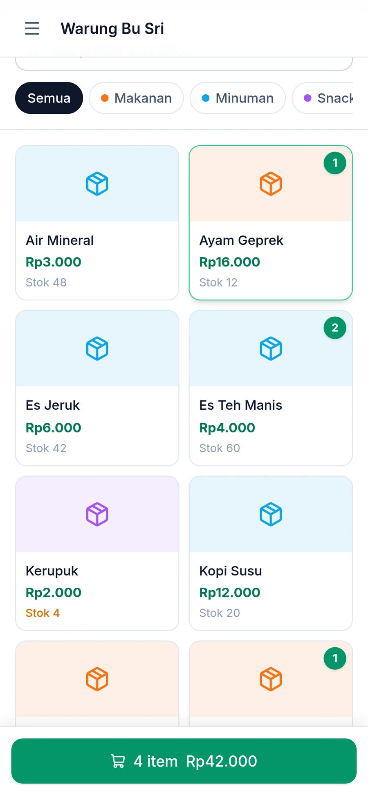
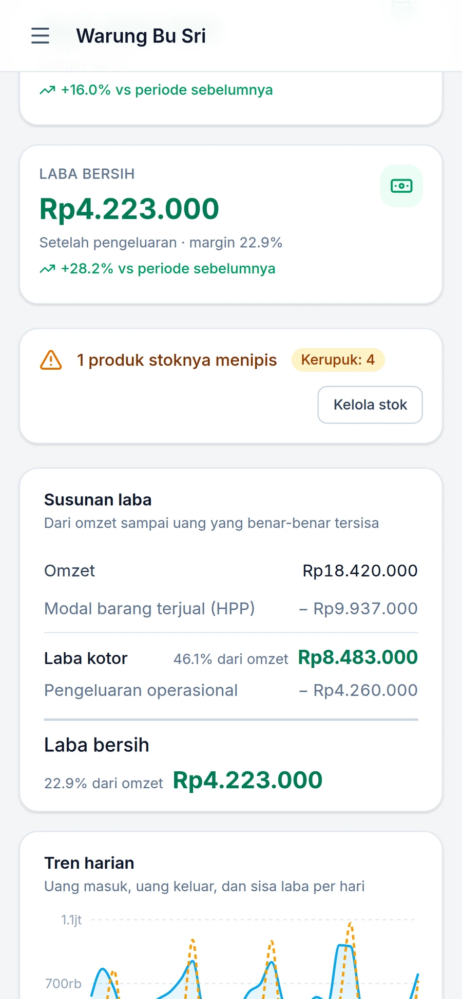
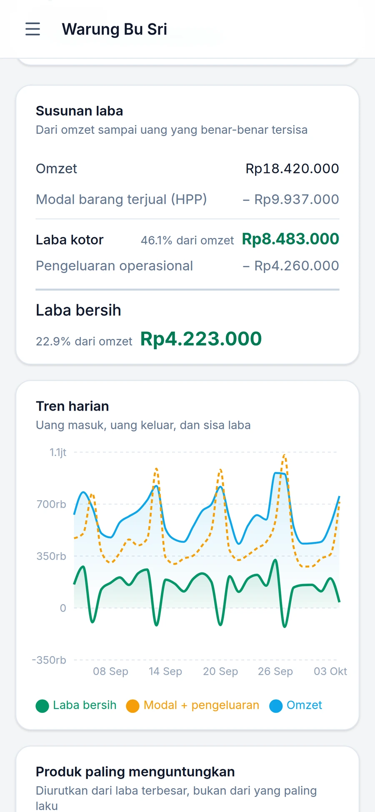
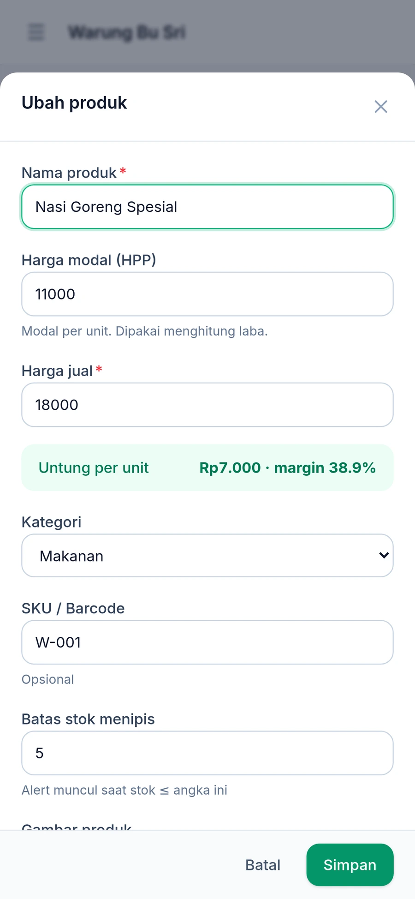
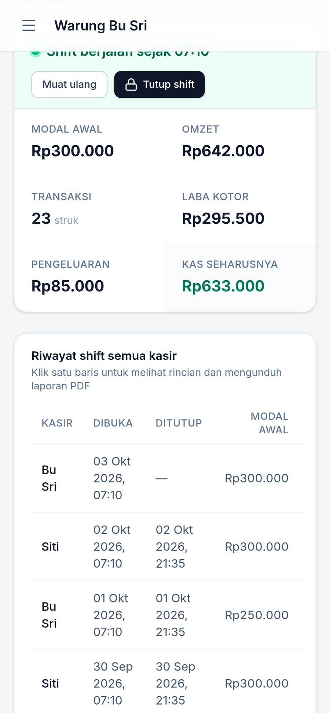

Warkas mencatat transaksi, stok, shift kasir, dan pengeluaran — lalu merangkumnya jadi satu angka yang jarang diketahui pemilik warung: sisa uang yang benar-benar jadi miliknya.

Transaksi ditulis tangan, rekapnya menunggu akhir bulan. Saat angkanya tidak cocok, tidak ada jejak untuk ditelusuri.
Uang masuk terlihat besar. Modal barang yang terjual dan biaya operasional tidak pernah ikut dikurangkan.
Tanpa catatan modal awal dan pengeluaran tunai per shift, selisih uang di laci tidak ketahuan asalnya.
Satu ketukan menambah barang ke keranjang. Stok terpotong saat transaksi selesai.
Harga pokok tiap barang disalin ke baris transaksi pada detik penjualan.
Omzet dikurangi modal jadi laba kotor, dikurangi pengeluaran jadi laba bersih.

Modal dibekukan per transaksi. Harga kulakan naik bulan depan tidak akan mengubah laporan bulan lalu — angka yang sudah tercatat tetap apa adanya.
Dari melayani pembeli di depan, sampai menutup laci saat warung tutup.



Berangkat dari satu pertanyaan: kenapa pemilik warung harus menunggu akhir bulan untuk tahu usahanya untung atau tidak.
Ceritakan alurnya — nanti kita bongkar bareng dan cari bentuk sistemnya.